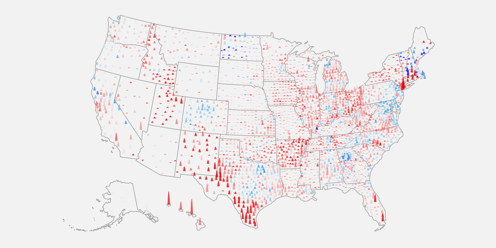

In an election year when the unemployment rate in the U.S. soared to its highest level since the Great Depression and was compared to a natural disaster, a terrorist attack and a financial shock all at once, many voters across the country — even in states with the biggest economic fallout — cast their ballots for President Donald Trump.
An NBC News analysis of unemployment and voting data found that the president’s share of the vote held steady or increased in each of the 20 counties with the highest rise in unemployment from September 2019 to September 2020. And his vote share improved by 1 percentage point or more in 70 of the 100 hardest-hit counties.
The data shows the trend was apparent nationwide, from Latino communities in southern Texas and Florida, to counties in California, Connecticut and even Hawaii, where the unemployment rate reached nearly 24 percent.
Across the country, unemployment claims shot up to historic levels in 2020 as businesses were forced to shutter to help contain the coronavirus outbreak. California was the first to issue a stay-at-home order during the pandemic, and saw 7.8 million unemployment applications filed during the 23-week span.
A bad economy typically hurts an incumbent’s party. In the 2008 election, voters delivered Democrat Barack Obama the presidency following the financial crisis that began under President George W. Bush, a Republican.
But this year, when jobless claims were higher than they were in the 2007-09 financial crisis, millions of Americans still threw their support behind Trump at the polls.
While Biden won more counties with higher unemployment , Trump's share of votes increased from 2016 to 2020 in most of the hardest-hit counties.
Democrats went into the election nervous about Trump's edge with voters on the economy , according to NBC News/Marist surveys released in September. While Joe Biden led on issues of character, health care, Covid-19 and crime in pre-election polling, most voters approved of Trump’s handling of the economy.
Democrats had hoped to win over those voters who were hurting financially; in speeches, Biden referred to workers who suffered because of the way he said Trump mismanaged the pandemic. Nonetheless, even though Biden won the election, Trump ultimately increased his vote share, or percentage of total votes, compared to 2016 in the counties with the highest unemployment spikes.

In Maui, Hawaii, where a 20.9-point rise in unemployment claims lead the nation, Trump’s vote share rose 5.2 points, from 25.9 percent in 2016 to 31.1 percent in 2020.
Trump substantially improved his share in many of the counties along Texas’ border with Mexico. For instance, Trump’s share of the vote rose nearly 17 points in Duval County, despite a 10-point rise in unemployment. In Starr County, Trump gained almost 29 points.
In Florida’s Miami-Dade County, home base to many cruise companies and a 10.7-point rise in unemployment, Trump’s share of the vote grew almost 12 points, from 34 percent to 46 percent.
In Texas, Democrats were surprised by an outpouring of support for Trump from the Latino community, given the president's characterization of immigrants and how acute unemployment was in the Rio Grande Valley, increasing as much as 11 points in some south Texas counties.
Antonio Arellano, the executive director of the Jolt Initiative , said his organization
launched the largest progressive Latino voter mobilization program in the state, targeting 75,000 Latino homes in Latino-majority neighborhoods.
He cautioned against an overarching narrative about Texas Latinos voting overwhelmingly for Trump.
“Only 15 percent of the Latino vote lives in South Texas.”
Even so, he said not nearly enough attention was paid to those communities.
“That community was on the edge before the pandemic hit, trying to struggle to figure out how they're going to pay the rent, how they're going to feed their kids, how they're going to make ends meet, and then this hit, and then they were left out of the conversation. We were underserved by the state leadership, and we were completely ignored by the federal government,” Arellano said.
“There was no investment in recruiting them or speaking to them, to mobilize, and so you see the outcomes of that small investment that the Republican Party actually did do, really benefited them, because they were the only ones talking to them. So that's why they came out and voted for them.”
In Duval County, Texas, unemployment reached 14 percent this year, and Trump increased his voter share there by nearly 17 percentage points.
“There are not a lot of jobs in this county,” said Mary Wilson, chairwoman of the Duval County Republican Party.
Wilson said the economy was soaring before the pandemic.
In Florida, Trump significantly improved his support in Miami-Dade County , going from nearly 334,000 votes in 2016 to almost 533,000 votes this year.
Ana Sofia Pelaez, executive director of the Miami Freedom Project and a progressive advocate, was surprised by the outpouring support for the president. Pelaez said she thought Trump’s handling of the pandemic should have worked against him. Her organization advocates for progressive policies in South Florida with a focus on Latino communities.
“I think we had the expectation that there was going to be accountability for the Covid response. The mishandling of a pandemic created the issues in the economy,” Pelaez said.
“We thought there would be some accountability in the election.”
Pelaez said unemployment was something deeply felt in Florida because many had trouble filing claims .
“The system itself was breaking down and wasn't built to withstand the influx of demands. And some would say by design. It was built as if it was meant to fail, and to stall off being able to fulfill valid requests for unemployment,” Pelaez said.
“I think one of the heartbreaks of this is that some of the people who were on the front lines, helping people responding to this broken system, weren't re-elected.”